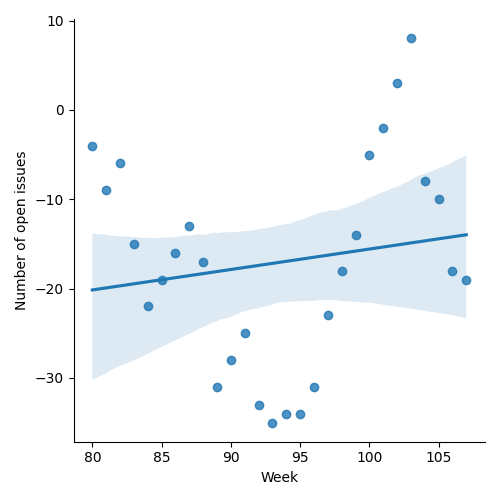
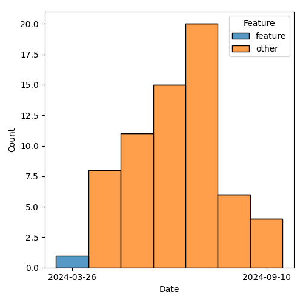

QT4 CG Meeting 092 Minutes 2024-10-01
Meeting index / QT4CG.org / Dashboard / GH Issues / GH Pull Requests
Table of Contents
- Draft Minutes
- Summary of new and continuing actions
[0/6] - 1. Administrivia
- 2. Technical agenda
- 2.1. PR #1465: 1461 Generate correct tests for functions involving named record types
- 2.2. PR #1460: 1323b Function parameters names: $uri → $source
- 2.3. PR #1429: Align type tests
- 2.4. PR #1437: 1325 Variadic System Functions limited to `fn:concat`
- 2.5. PR #1455: 1445 Drop number-formatter option, retain string value
- 3. Adjourned
Draft Minutes
Summary of new and continuing actions [0/6]
[ ]QT4CG-080-07: NW to update the build instructions in the README[ ]QT4CG-082-02: DN to work with MK to come to agreement on the fn:ranks proposal[ ]QT4CG-088-01: NW to consider how best to add a dedication to MSM.[ ]QT4CG-088-04: [Someone] needs to update the processing model diagram needs vis-a-vis the static typing feature[ ]QT4CG-089-01: CG to draft a PR that attempts to resolve the operators described in #755 to a smaller number of orthogonal choices.[ ]QT4CG-091-01: MK to make sure there’s an editorial note about parameter renaming.
1. Administrivia
1.1. Roll call [12/12]
[X]David J Birnbaum (DB)[X]Reece Dunn (RD)[X]Sasha Firsov (SF)[X]Christian Grün (CG)[X]Joel Kalvesmaki (JK) [:05-][X]Michael Kay (MK)[X]Juri Leino (JLO)[X]John Lumley (JWL)[X]Dimitre Novatchev (DN)[X]Wendell Piez (WP)[X]Ed Porter (EP)[X]Norm Tovey-Walsh (NW). Scribe. Chair.
1.2. Accept the agenda
Proposal: Accept the agenda.
Accepted.
1.2.1. Status so far…
These charts have been adjusted so they reflect the preceding six months of work.

Figure 1: “Burn down” chart on open issues

Figure 2: Open issues by specification

Figure 3: Open issues by type
1.3. Approve minutes of the previous meeting
Proposal: Accept the minutes of the previous meeting.
Accepted.
1.4. Next meeting
This next meeting is planned for 8 October. Any regrets?
None heard.
1.5. Review of open action items [0/6]
(Items marked [X] are believed to have been closed via email before this agenda was posted.)
[ ]QT4CG-080-07: NW to update the build instructions in the README[ ]QT4CG-082-02: DN to work with MK to come to agreement on the fn:ranks proposal[ ]QT4CG-088-01: NW to consider how best to add a dedication to MSM.[ ]QT4CG-088-04: [Someone] needs to update the processing model diagram needs vis-a-vis the static typing feature[ ]QT4CG-089-01: CG to draft a PR that attempts to resolve the operators described in #755 to a smaller number of orthogonal choices.[ ]QT4CG-091-01: MK to make sure there’s an editorial note about parameter renaming.
1.6. Review of open pull requests and issues
1.6.1. Blocked
The following PRs are open but have merge conflicts or comments which suggest they aren’t ready for action.
1.6.2. Merge without discussion
The following PRs are editorial, small, or otherwise appeared to be uncontroversial when the agenda was prepared. The chairs propose that these can be merged without discussion. If you think discussion is necessary, please say so.
- PR #1466: 1464 Standardize on "implementer" spelling
Proposal: merge without discussion
Accepted.
(The PR was blocked by merge conflicts at the time of publication.)
1.6.3. Substantive PRs
The following substantive PRs were open when this agenda was prepared.
- PR #1465: 1461 Generate correct tests for functions involving named record types
- PR #1460: 1323b Function parameters names: $uri → $source
- PR #1455: 1445 Drop number-formatter option, retain string value
- PR #1437: 1325 Variadic System Functions limited to `fn:concat`
- PR #1429: 1403 Align type tests
- PR #1355: 1351 Add "declare record" in XQuery
- PR #1227: 150 PR resubmission for fn ranks
2. Technical agenda
2.1. PR #1465: 1461 Generate correct tests for functions involving named record types
- See PR #1465
NW observes that you can’t see the results in the published PR because stylesheet changes don’t show up there (security, man).
MK introduces the issue. Started with issues related to test generation reported by JWL. That ended up interacting with the record definitions are maintained. It’s purely editorial but quite complex.
- MK: It doesn’t purely effect presentation of the text, but there are schema changes.
- … Perhaps we should look at the comments in #1336.
MK reviews the analysis and comments in the issue.
- MK: The main difference is that the record type is displayed below it’s reference.
- DN: I think there are more record types.
- MK: Yes, but they currently don’t have formal record type definitions, but we can use it once we’ve got it straight.
- DN: Are we going to have a section where we define standard record types, that we don’t need to define every time?
- MK: Currently, almost all the record types are used by only a single function (or two), but when that need arises, we certainly can.
- DN: I want to see the generic record type as a standard type.
- … I’d like feedback on how to proceed on the generator. It will require about 20 functions and how should we do that?
- MK: That’s such a big proposal that I think a freestanding paper would be good.
- DN: Isn’t the opening comment in the issue that document?
- MK: I think it needs another layer of detail.
- … Separate the technical discussion of technical features from the editorial problems of where to put them.
- JWL: I think we have two things together here, in terms of the F&O specs we
want to encourage people to get more examples of using record types. The next
stage of defining that there are built in record types is a bigger step that I
think is not necessarily required. What’s the mechanism?
- … In once sense we’re drifting into standard schema land which isn’t something we’ve necessarily tackled before.
- MK: Yes, defining a standard library is a step further.
- DN: I think that we have a practical requirement, to reflect the actual facts is sensible. It has nothing to do about theoretical structuring.
Proposal: accept this PR.
Accepted.
2.2. PR #1460: 1323b Function parameters names: $uri → $source
See PR #1460
- CG: We talked about the
$uriand$href$ parameters last time. Most people liked source, so I’ve renamed them all to ~$source. - DN: I think that “source” is very generic and here “href” means something like
a link. This is lost when we say source. We discussed this in the issue. I
think “locator” would be better than url and href.
- … Definitely source is too generic and loses the meaning that there’s indirection here.
- MK: I think the choice of names is arbitrary.
- JLO: This is not the hill I want to die on, but I have to agree with DN here that “source” could be misleading.
The chair tries a straw poll. In favor of “source”: 6. In favor of “locator”: 2.
- NW: I don’t think that’s persuasive.
Several folks are in favor of merging this PR.
- NW: does anyone object?
DN: I object. And I wish that objection to be recorded.
Proposal: merge this PR.
With DN’s objection recored, the CG agrees to this accept this PR.
(The PR was blocked by merge conflicts at the time of publication.)
2.3. PR #1429: Align type tests
See PR #1429
JLO reviews the changes in the PR. Basically adding “map()” without * and updating examples.
- JLO: There’s ongoing discussion of whether we want alignment or consistency.
- … If we do this, we should also allow
record()without an asterisk.
- … If we do this, we should also allow
- MK: I think semantics of record with * and without are different.
- JLO: Oh, ok, then it’s fine the way it is.
Some discussion of the meaning of record() (without a *).
- DN: It is interesting that during the same meeting we have two problems with
consistency. The spelling of “implement(er/or)” in the first case and the use
of
map()ormap(*)in the second. These are all functions, and I think the way we do functions is with “*” so that’s what we should do. - JLO: That’s not true, we function without an *.
- DN: Yes, I’m talking about the general type of function, not the specific zero
arity function.
- … This is why the lack of * should be reserved for more specific cases.
- MK: I think I’m inclined to agree with DN here.
Proposal: the CG declines to make this change.
Accepted.
2.4. PR #1437: 1325 Variadic System Functions limited to `fn:concat`
See PR #1437.
- CG: We talked about this last time, but it wasn’t accepted.
- … Current we have three variadic functions but no priciple for why they should or should not be variadic.
- … We need variadicity for
fn:concatbut we don’t need it for the other functions. - … We might want to add an options parameter, for example, which wouldn’t be possible if they are variadic.
- … I think we could make
fn:identityvariadic, but that’s not part of the PR.
- CG: The PR removes varadicity for functions except fn:concat
- JWL: I’m persuaded by CG’s argument. Especially the idea of making
fn:identityvariadic. Just leave concat as it is and don’t promulgate anymore if you can avoid it. - DN: I’m a little bit undecided. I think having variadic parameters helps a little bit with the syntax of the function call.
- CG: My proposal would be to do this in a second step; define which functions should be variadic and why and then introduce them.
- DN: Then we should have an action item.
- CG: We could keep the issue open because that’s where the discussion occured.
- WP: This may be off, but is there a world where concat were simply deprecated?
- … If that’s the outliner that’s causing the pain, it’s a bit of an outlier
- MK: It may be archaic but it’s a lot of work to add a couple of parens.
- … If we aren’t going to take advantage of it, then it just adds complexity with no real benefit.
Some discussion of whether the feature of allowing users to define variadic functions should remain.
- JWL: I like this PR. We can explore the issue in more detail. I also think the
fn:identityfunction is a good candidate for variadicity.
Proposal: accept this PR.
Accepted.
(The PR was blocked by merge conflicts at the time of publication.)
Some discussion of how we might or might not track future action.
2.5. PR #1455: 1445 Drop number-formatter option, retain string value
See PR #1455.
MK introduces the PR.
- MK: This concerns the XML to JSON conversion. There’s a widely reported
usability problem. If you have XML that contains a telephone number or
something that’s 11 digits, when you convert it to JSON you get floating point.
- … Our response to that was to introduce a number-formatter option.
- … This proposal is for a simpler solution which says we retain the value.
- … With the single exception that we will remove leading zeros.
- … Don’t use numeric values for things that aren’t numbers!
- MK: This is a small backwards incompatibility because it means that the resulting XML will be different.j
- … The PR removes a bad feature from the spec and simplifies it.
- WP: What determines that it’s a number?
- MK: It’s tagged a number. This isn’t about generic conversion, it’s only for this specific vocabulary.
Proposal: accept this PR.
Accepted.